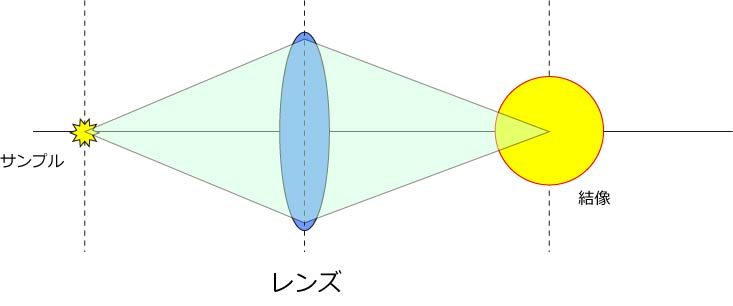
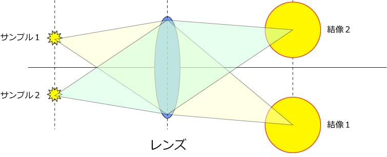
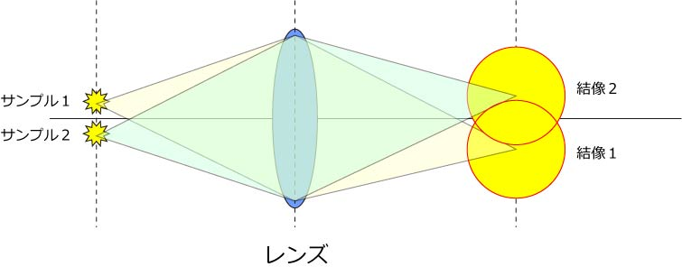

では，なぜレンズによる拡大に限界があるのでしょう？
それは，
一点から発せられた光をレンズを用いて結像させた際に，一点に収束しない
と言う性質があるからです．
簡単に，以下の図を見てもらいましょう．

左の，サンプル，から発せられた光はレンズを通して，右側のある点に結像しますが，これがある広がりを持ってしまうのです．
なぜか？？？
とりあえず，光の性質，として理解しましょう．．．．
きちんと理解したい人は，光学の本を参考にしてみてください．
さて，次の問題は，
二点から発せられた光はレンズを通じてどのように結像するでしょう？
と言う問題．
では，サンプル１，と，サンプル２，から発せられた光を見てみましょう．

まあ，二つの黄色い○は，それぞれの位置に結像していますので，我々はこれを区別して観察することができます．
しかし，どんどんサンプル１とサンプル２が近づいていくとどうなるでしょう？

サンプル１とサンプル２の結像像が重なり合って，我々には二点から発せられた点と判断できなくなってきます．
つまり，
光を使う以上，拡大率とは関係なく，分解能に限界がある
と言うものなのです．
ここで，重要なのは，”分解能”という言葉．
ここでは，分解能とは，
二点から発せられる輝点を区別できる能力
と言う意味です．
つまり，何かしらの微細構造があるとして，それを観察する際にどんどん拡大しても見えないものは見えない，と言うことなのです．
じゃあ，どの程度なの？と言うことは次のページにて説明しましょう．